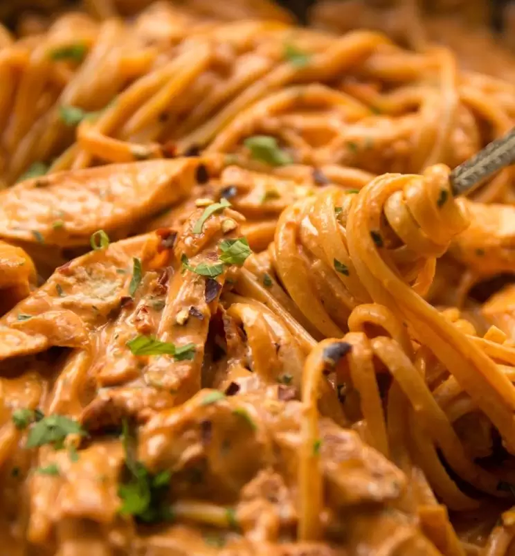

Spicy Chicken Pasta

Description
A spicy and creamy chicken pasta with sun dried tomatoes.
Ingredients
- 1x 9oz/250g Chicken Breast, at room temp
- 2 tsp Olive Oil
- 1/2 tsp Smoked Paprika
- 1/2 tsp Cayenne Pepper
- 1/4 tsp Salt
- 1/4 tsp Black Pepper
- 7oz / 200g Linguine (or other long cut pasta)
- 2/3 cup / 160ml Heavy/Double Cream
- 1/3 cup / 80ml Chicken Stock
- 1/4 cup / 60ml Dry White Wine
- 1oz / 30g Parmesan, finely grated
- 6 (2oz/60g) Sun Dried Tomatoes, finely diced
- 2 tbsp Tomato Puree (tomato paste in US)
- 1 tbsp Butter
- 1 tbsp Fresh Parsley, finely diced
- 1 small Onion, finely diced
- 1 tsp Garlic, minced
- 1/2 tsp Chilli Flakes
- Salt & Pepper, to taste
Steps
- In a small bowl, combine 2 tsp olive oil, 1/2 tsp smoked paprika and cayenne pepper, and 1/4 tsp salt and black pepper.
- Butterfly your chicken breast right the way through to make 2 even sized breasts. Coat in spicy marinade.
- Place in a skillet over medium-high heat and fry for 3mins each side, or until nicely charred and just cooked through the centre
(depending on thickness may take more or less time). Place to one side and when ready, slice into thin strips, ensuring you slice
against the natural grain of the chicken and at a slight angle.
- Turn heat down to medium and melt in 1 tbsp butter, scraping off the flavour from the chicken with a wooden spoon. Add your onion
and fry until it begins to soften and pick up colour. Add 1 tsp garlic, fry for 1-2mins longer, then add 1/2 tsp chilli flakes.
Fry for 1 min longer, then add sun dried tomatoes. Fry for another minute just to soften them, then pour in 1/4cup/60ml dry white wine.
Allow the wine to completely reduce (important to burn off the alcohol, should take 5 or so mins).
- Meanwhile, add 7oz/200g pasta to salted boiling water and cook until al dente. Retain a cup of starchy pasta water towards the end of cooking.
- Add 2 tbsp tomato puree to the pan. Fry this for 2mins (important to sweeten the taste) then deglaze the pan with 1/3cup/80ml chicken stock.
Pour in 2/3cup/160ml heavy/double cream and season to taste with salt & pepper.
- Use pasta tongs to add pasta in and toss to combine. Add 1oz/30g freshly grated parmesan, 1 tbsp fresh parsley and your chicken strips.
Toss again to coat, using your starchy pasta water to thin out if needed.